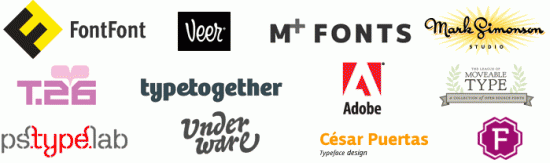
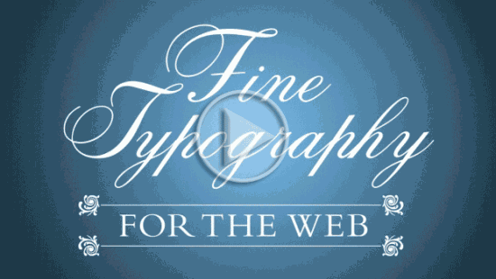

So you want to change the font on your website and you want it to be a funkier font? Google appears to lower their competitors in Google search results so I figured I would give them a fighting chance.
PrimaryBlogger has the Google Font API plugin enabled by default. You can install the plugin from the “Add New” tab under the plugins section of your WordPress admin. Or, upload the plugin folder to your server and do it the old fashioned way.
Here are 3 font APIs you could use:

Free for 2 fonts, slightly fussy to deploy, requires sign up, requires a badge on your website.

Thousands of fonts, slightly fussy to deploy, requires sign up, requires a badge on your website.

Google Font API is probably the easiest of the 3 to deploy and doesn’t require a badge or sign up. It is the most limited as far as # of fonts to chose from.
 Awesome Font stack
Awesome Font stackA super slick font selector/generator that gives you the files and CSS to go ahead and get started. I like it because you can try multiple fonts together before downloading them.

{kind=link}
{kind=link}